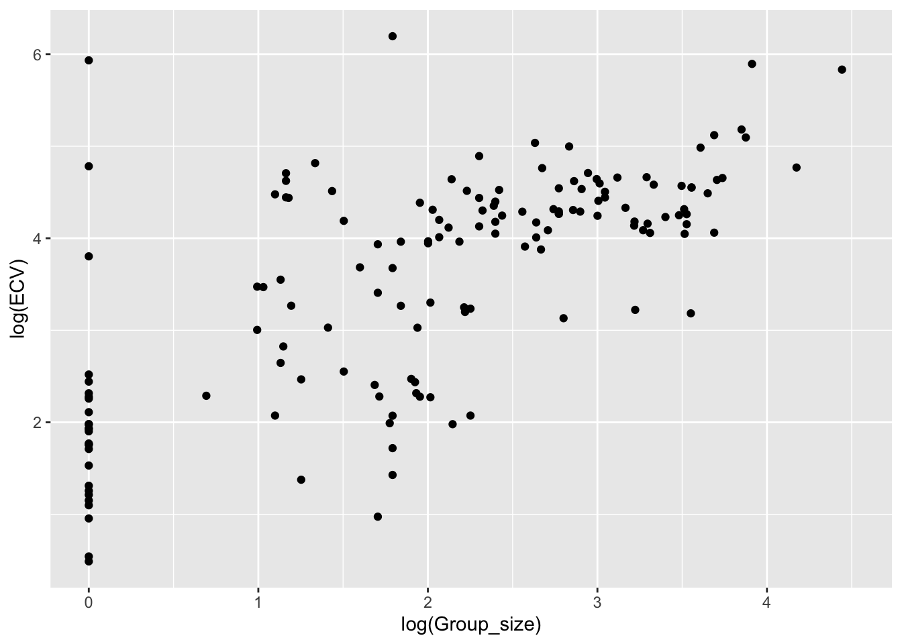
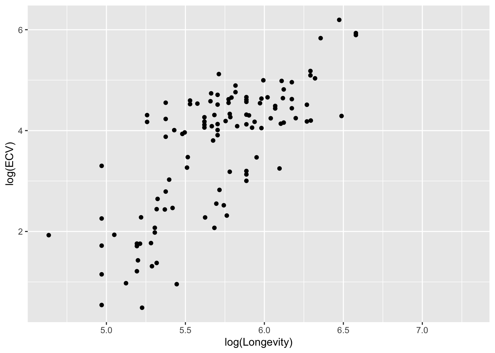
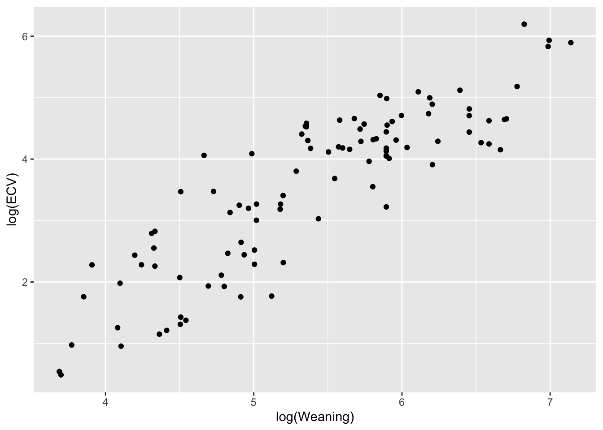
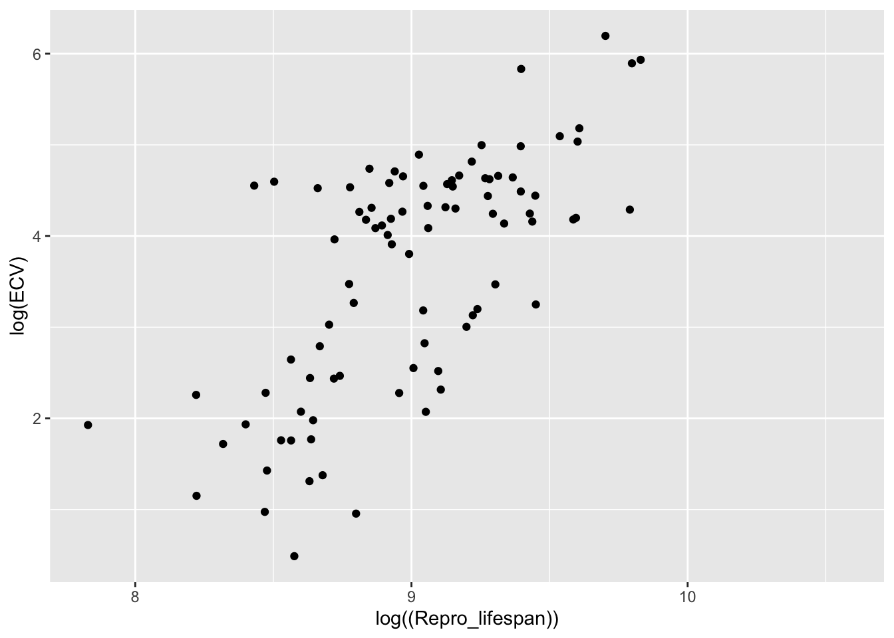
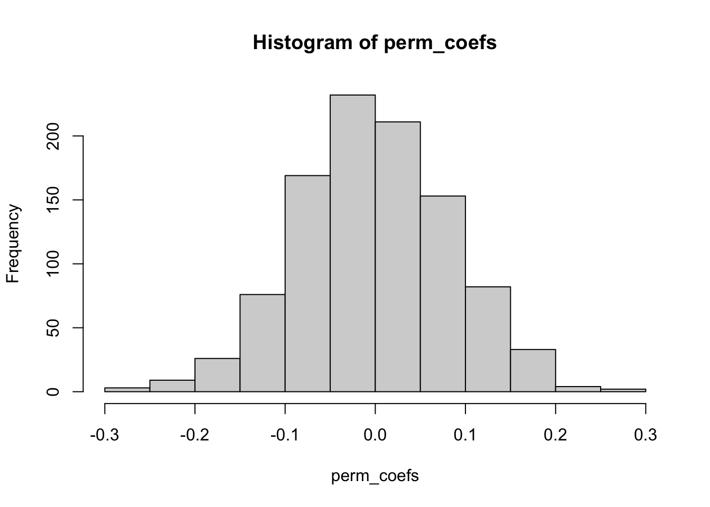
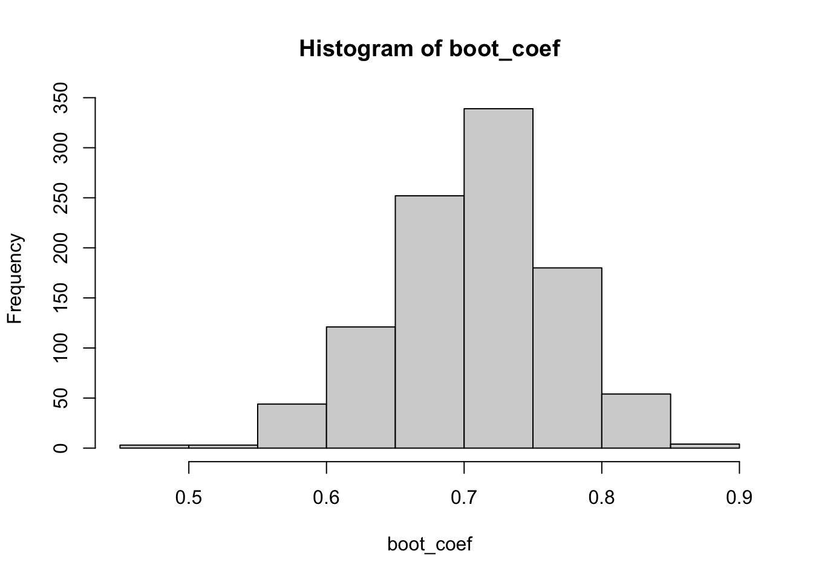

Use the read_csv() function to load the “Street_et_al_2017.csv” dataset as a “tibble” named d. Generate the five-number summary, (median, minimum and maximum and 1st and 3rd quartile values), plus mean and standard deviation, for each quantitative variable
To begin the exercise, I load in the {tidyverse} package in order to use read_csv(). I then assign the dataset URL as a tibble called “d”; col_names is set to TRUE to ensure the first row are used as column names. I looked through the dataset briefly using head(), names(), and str().
library(tidyverse) # loading in necessary package
── Attaching core tidyverse packages ──────────────────────── tidyverse 2.0.0 ──
✔ dplyr 1.1.4 ✔ readr 2.1.6
✔ forcats 1.0.1 ✔ stringr 1.6.0
✔ ggplot2 4.0.1 ✔ tibble 3.3.1
✔ lubridate 1.9.4 ✔ tidyr 1.3.2
✔ purrr 1.2.1
── Conflicts ────────────────────────────────────────── tidyverse_conflicts() ──
✖ dplyr::filter() masks stats::filter()
✖ dplyr::lag() masks stats::lag()
ℹ Use the conflicted package (<http://conflicted.r-lib.org/>) to force all conflicts to become errors
# loading in datasetd <-read_csv("https://raw.githubusercontent.com/difiore/ada-datasets/main/Street_et_al_2017.csv", col_names =TRUE)
Rows: 301 Columns: 13
── Column specification ────────────────────────────────────────────────────────
Delimiter: ","
chr (2): Species, Taxonomic_group
dbl (11): Social_learning, Research_effort, ECV, Group_size, Gestation, Wean...
ℹ Use `spec()` to retrieve the full column specification for this data.
ℹ Specify the column types or set `show_col_types = FALSE` to quiet this message.
spc_tbl_ [301 × 13] (S3: spec_tbl_df/tbl_df/tbl/data.frame)
$ Species : chr [1:301] "Allenopithecus_nigroviridis" "Allocebus_trichotis" "Alouatta_belzebul" "Alouatta_caraya" ...
$ Taxonomic_group : chr [1:301] "Catarrhini" "Catarrhini" "Platyrrhini" "Platyrrhini" ...
$ Social_learning : num [1:301] 0 0 0 0 0 3 0 0 0 0 ...
$ Research_effort : num [1:301] 6 6 15 45 37 79 25 4 82 22 ...
$ ECV : num [1:301] 58 NA 52.8 52.6 51.7 ...
$ Group_size : num [1:301] 40 1 7.4 8.9 7.4 13.1 5.5 NA 7.9 4.1 ...
$ Gestation : num [1:301] NA NA NA 186 NA ...
$ Weaning : num [1:301] 106 NA NA 323 NA ...
$ Longevity : num [1:301] 276 NA NA 244 NA ...
$ Sex_maturity : num [1:301] NA NA NA 1277 NA ...
$ Body_mass : num [1:301] 4655 78.1 6395 5383 5175 ...
$ Maternal_investment: num [1:301] NA NA NA 509 NA ...
$ Repro_lifespan : num [1:301] NA NA NA 6133 NA ...
- attr(*, "spec")=
.. cols(
.. Species = col_character(),
.. Taxonomic_group = col_character(),
.. Social_learning = col_double(),
.. Research_effort = col_double(),
.. ECV = col_double(),
.. Group_size = col_double(),
.. Gestation = col_double(),
.. Weaning = col_double(),
.. Longevity = col_double(),
.. Sex_maturity = col_double(),
.. Body_mass = col_double(),
.. Maternal_investment = col_double(),
.. Repro_lifespan = col_double()
.. )
- attr(*, "problems")=<externalptr>
To generate a five-number summary, mean, and standard deviation (SD) for each quantitative variable, I loaded in the package {skimr} to use the skim(). skim() provides a nice overview (as a tibble), which shows the mean, SD, percentile values, and histograms of the distribution.
library(skimr) # loading in another package# exploratory analysis using skim()skim(d)
Data summary
Name
d
Number of rows
301
Number of columns
13
_______________________
Column type frequency:
character
2
numeric
11
________________________
Group variables
None
Variable type: character
skim_variable
n_missing
complete_rate
min
max
empty
n_unique
whitespace
Species
0
1
10
41
0
301
0
Taxonomic_group
0
1
10
12
0
3
0
Variable type: numeric
skim_variable
n_missing
complete_rate
mean
sd
p0
p25
p50
p75
p100
hist
Social_learning
98
0.67
2.30
16.51
0.00
0.00
0.00
0.00
214.00
▇▁▁▁▁
Research_effort
115
0.62
38.76
80.59
1.00
6.00
16.00
37.75
755.00
▇▁▁▁▁
ECV
117
0.61
68.49
82.84
1.63
11.82
58.55
86.20
491.27
▇▁▁▁▁
Group_size
114
0.62
13.26
15.20
1.00
3.12
7.50
18.23
91.20
▇▂▁▁▁
Gestation
161
0.47
164.50
38.00
59.99
138.35
166.03
183.26
274.78
▁▅▇▃▁
Weaning
185
0.39
311.09
253.08
40.00
121.66
234.16
388.78
1260.81
▇▃▁▁▁
Longevity
181
0.40
331.97
165.67
103.00
216.00
301.20
393.30
1470.00
▇▂▁▁▁
Sex_maturity
194
0.36
1480.23
999.23
283.18
701.52
1427.17
1894.11
5582.93
▇▆▂▁▁
Body_mass
63
0.79
6795.18
14229.83
31.23
739.44
3553.50
7465.00
130000.00
▇▁▁▁▁
Maternal_investment
197
0.35
478.64
292.07
99.99
255.88
401.35
592.22
1492.30
▇▅▂▁▁
Repro_lifespan
206
0.32
9064.97
4601.57
2512.16
6126.22
8325.89
10716.60
39129.57
▇▃▁▁▁
Step 2:
Plot brain size (ECV) as a function of social group size (Group_size), longevity (Longevity), juvenile period length (Weaning), and reproductive lifespan (Repro_lifespan).
To plot ECV as a function of social group size, longevity, juvenile period length, and reproductive lifespan, I used ggplot() and geom_point() to get a bivariate scatterplot. Each variable was log-transformed to make the data more interpretable and remove the skew that was present in the non-transformed data; it is also necessary to do to meet the assumptions of a regression analysis. na.rm() was also used to remove any missing data just in case!
# plotting ECV vs. social group size (both log-transformed)ggplot(data = d, aes(x =log(Group_size), y =log(ECV))) +geom_point(na.rm =TRUE) # removing any missing values

# plotting ECV vs. longevity (both log-transformed)ggplot(data = d, aes(x =log(Longevity), y =log(ECV))) +geom_point(na.rm =TRUE)

# plotting ECV vs. juvenile period length (both log-transformed)ggplot(data = d, aes(x =log(Weaning), y =log(ECV))) +geom_point(na.rm =TRUE)

# plotting ECV vs. reproductive lifespan (both log-transformed)ggplot(data = d, aes(x =log((Repro_lifespan)), y =log(ECV))) +geom_point(na.rm =TRUE)

Step 3:
Derive by hand the ordinary least squares regression coefficients (beta1 and beta0) for ECV as a function of social group size.
To calculate the ordinary least squares regression coefficients, I started out by filtering out rows that may be missing values for one of the variables using the pipe operator and conditions statements. The conditional statement ensures that we are filtering rows that do not, not have missing values (by !is.na) for the variables of interest. The output was assigned to a temporary dataset, “temp_d.”
I was honestly not 100% on whether to perform the next steps with the log-transformed or raw data. To me, it makes sense to continue with the log-transformed data so the OLS assumptions aren’t violated and for consistency with the previous step. However, I added both calculations for the raw and log-transformed data just in case.
To calculate beta1, I used the built-in covariance function and divided the covariance of ECV and group size by the variance of the predictor (x) variable, group size; this value was assigned to the object “beta_1.” I also did another method that breaks down the covariance and variance equations; this was assigned to “beta1_a.” This value ultimately describes the relationship between group size and ECV.
To calculate beta0, I subtracted the product of beta1 and the mean of the predictor variable (group size) from the mean of the response variable (ECV), based on the beta0 equation. This is the value of y (ECV) when x (group size) is 0 (i.e., the y-intercept).
# calculating OLS regression coefficients for raw data# removing rows and assigning to temporary datasettemp_d <- d |>filter(!is.na(Group_size) &!is.na(ECV)) # calculating beta1 by handbeta1 <- (cov(temp_d$ECV, temp_d$Group_size))/(var(temp_d$Group_size))beta1 # calling object
[1] 2.463071
# an alternate waybeta1_a <-sum((temp_d$ECV -mean(temp_d$ECV)) * (temp_d$Group_size -mean(temp_d$Group_size)))/sum((temp_d$Group_size -mean(temp_d$Group_size))^2)beta1_a
[1] 2.463071
# calculating beta0 by handbeta0 <-mean(temp_d$ECV) - beta1 *mean(temp_d$Group_size)beta0
[1] 30.35652
# calculating OLS regression coefficients for log-transformed data# calculating beta1 by handlog_beta1 <- (cov(log(temp_d$ECV), log(temp_d$Group_size)))/(var(log(temp_d$Group_size)))log_beta1 # calling object
[1] 0.7078342
# an alternate waylog_beta1_a <-sum((log(temp_d$ECV) -mean(log(temp_d$ECV))) * (log(temp_d$Group_size) -mean(log(temp_d$Group_size))))/sum((log(temp_d$Group_size) -mean(log(temp_d$Group_size)))^2)log_beta1_a
[1] 0.7078342
# calculating beta0 by handlog_beta0 <-mean(log(temp_d$ECV)) - log_beta1 *mean(log(temp_d$Group_size))log_beta0
[1] 2.145548
Step 4:
Confirm that you get the same results using the lm() function.
To confirm I got the same results as the by-hand derivations of the OLS regression coefficients, lm() was used and the results were visualized using summary(). I checked the results for both the raw and log-transformed data.
For both of them, the values were the same!
# checking with lm() function (raw data)m <-lm(ECV ~ Group_size, data = temp_d)summary(m) # visual overview of statistical results
Call:
lm(formula = ECV ~ Group_size, data = temp_d)
Residuals:
Min 1Q Median 3Q Max
-92.05 -29.25 -15.14 13.07 445.28
Coefficients:
Estimate Std. Error t value Pr(>|t|)
(Intercept) 30.3565 6.7963 4.467 1.56e-05 ***
Group_size 2.4631 0.3508 7.021 7.26e-11 ***
---
Signif. codes: 0 '***' 0.001 '**' 0.01 '*' 0.05 '.' 0.1 ' ' 1
Residual standard error: 60.31 on 149 degrees of freedom
Multiple R-squared: 0.2486, Adjusted R-squared: 0.2436
F-statistic: 49.3 on 1 and 149 DF, p-value: 7.259e-11
# checking with lm() function (log-transformed data)log_m <-lm(log(ECV) ~log(Group_size), data = temp_d)summary(log_m)
Call:
lm(formula = log(ECV) ~ log(Group_size), data = temp_d)
Residuals:
Min 1Q Median 3Q Max
-2.3777 -0.4331 0.0553 0.4056 3.7877
Coefficients:
Estimate Std. Error t value Pr(>|t|)
(Intercept) 2.14555 0.14177 15.13 <2e-16 ***
log(Group_size) 0.70783 0.06075 11.65 <2e-16 ***
---
Signif. codes: 0 '***' 0.001 '**' 0.01 '*' 0.05 '.' 0.1 ' ' 1
Residual standard error: 0.9005 on 149 degrees of freedom
Multiple R-squared: 0.4768, Adjusted R-squared: 0.4733
F-statistic: 135.8 on 1 and 149 DF, p-value: < 2.2e-16
# extracting resultslog_m$coefficients
(Intercept) log(Group_size)
2.1455483 0.7078342
Step 5:
Repeat the analysis above for three different major radiations of primates - “catarrhines”, “platyrrhines”, and “strepsirhines”) separately.
In order the repeat the analysis for the three major radiations of primates, I filtered the temporary dataset (temp_d) further to generate the regression coefficients for each group separately using lm(). This time, I used the log-transformed data only to reduce the amount of code.
I then performed the regression analysis using the lm() function for each filtered dataset to generate the regression coefficients. To compare the coefficients, I simply used the “$” operator on the linear modeling objects (“m_[abbreviated name]”) for the coeffcients.
# analysis for catarrhinescat <- temp_d |>filter(Taxonomic_group =="Catarrhini") # filtering by taxonomic groupm_cat <-lm(log(ECV) ~log(Group_size), data = cat) # regression analysis on log-transformed data# analysis for platyrrhinesplaty <- temp_d |>filter(Taxonomic_group =="Platyrrhini")m_platy <-lm(log(ECV) ~log(Group_size), data = platy)# analysis for strepsirhinesstreps <- temp_d |>filter(Taxonomic_group =="Strepsirhini")m_streps <-lm(log(ECV) ~log(Group_size), data = streps)# comparison between regression coefficientsm_cat$coefficients
Do your regression coefficients differ among groups? How might you determine this? Response: The regression coefficients of Platyrrhini and Strepsirhini are quite similar. They both show similar positive relationships between group and brain sizes. However, they ar notably differ from Catarrhini. Catarrhini shows a higher intercept but a slightly negative slope, suggesting group size as a poor predictor of ECV.
To determine whether the regression coefficients differ between the groups, I would calculate the standard error for each slope and generate their 95% confidence intervals. If the confidence intervals do not overlap, it would support that the taxonomic groups are significantly different between this relationship.
Step 6:
For your first regression of ECV on social group size, calculate the standard error for the slope coefficient, the 95% CI, and the p value associated with this coefficient by hand. Also extract this same information from the results of running the lm() function.
To calculate the the SEs for the slope coefficient, I start of by calculating the sum of squares of y (SSY), which measures the total variation in the y variable, ECV. Throughout this analysis, I used indices ([[1]] for the response variable, and [[2]] for the predictor variable) according to the log-transformed data structure (log_m$model) for simplicity.
Then, I calculate the regression sum of squares (SSR), which looks at the explained variation and determines how well the model represents the data. The SSE (error sum of squares) was then calculated to determine the unexplained variation in the data. Next, the mean squared error (MSE) was calculated to get the average unexplained variance, which takes the SSE and divides it by the degrees of freedom (n-2. The sum of square of x (SSX) was calculated afterwardm which measures the total variation in the x variable, social group size. SSX is the sum of the squared differences between the species’ group size and the average group size for that radiation.
Finally, I calculated the slope coefficient by taking the square root of MSE divided by SSX.
# linear model of interestlog_m <-lm(log(ECV) ~log(Group_size), data = temp_d)log_m # calling results
# calculating MSEn <-nrow(log_m$model) # number of observationsdf_error <- n -2# because we are estimating two parameters (beta1 and beta0)MSE <- SSE/df_error # mean remaining varianceMSE
[1] 0.810931
# calculating SSXSSX <-sum((log_m$model[[2]] -mean(log_m$model[[2]]))^2) # variation in xSSX
[1] 219.7424
# calculating the slope coefficientSE_beta1 <-sqrt(MSE/SSX)SE_beta1
[1] 0.06074842
I calculated the 95% confidence intervals (CIs) by first assigning the critical value with the qt() function, with df determined by df.residual(); this function takes the number of observations (n) and subtracts the number of parameters estimated (p)–in this case, 2 parameters. 0.975 was used to generate a 95% confidence interval (where 0.975 leaves 2.5% in the tails). I then calculated the lower and upper bounds of the CI using the log-transformed beta1 value, critical value, and the SE of the slope coefficient.
To calculate the p-value, I determined the t-statistic, which is the slope coefficient divided by the SE of the slope coefficient. The pt() function was then used to find the area in the lower tail that correspond to the absolute value of the t-statistic. This was multiple by two to account for both tails. This ultimately represents the probability of obtaining an extreme coefficient as the one observed, asumming social group size has no effect on ECV.
To confirm that the same results are obtained with the lm() function, I first loaded in the required {broom} package. I then used the tidy() function to make a clean, readable table of the key statistics of the linear model, “log_m.” The SE, 95% CI, and p-values were extracted from the tidy data frame for comparison to the values calculated by hand. I used “[]” extraction to easily extract data pertaining to the slope (beta1), which is of interest; the values are in the second row, which is why I used “[2].”
# loading in package for tidy()library(broom)# checking with lm() function (log-transformed data)# creating tidy summary for linear models <-tidy(log_m, conf.int =TRUE, conf.level =0.95)s
Use a permutation approach with 1000 permutations to generate a null sampling distribution for the slope coefficient. What is it that you need to permute? What is the p value associated with your original slope coefficient? You can use either the quantile method or a theory-based method sampling distribution as the estimate of the standard error, or both, to calculate this p value.
For our current linear model, I need to permute the predictor variable, social group size, while keeping the response variable, ECV, the same.
To begin the permutation approach, I first generate an object called “observed_coef,” which pulls out the specific slope coefficient from the tidy table to represent the actual slope. The permutation appraoch is then set up by defining the number of permutations (1000) and creating an empty vector that will contain the 1000 different slope coefficients generated from this simulation. A permutation for loop is created, where a temporary copy of the dataset is made for each round, the social group sizes are shuffled (by sample()) (while ECV remains the same), and a new linear regression analysis is performed on the shuffled data for every loop iteration.
Lastly, I visualize the null distribution using a histogram. This allows me to see how far away the observed coefficient–0.708–sits from the null sampling distribution. Since it is far away from the center, it supports that we have statistically determined that the relationship between ECV and social group size may not be due to chance.
# extracting the observed slope coefficientobserved_coef <-tidy(log_m) |># creating a tidy tablefilter(term =="log(Group_size)") |># filtering group sizepull(estimate) # pulling resultobserved_coef
[1] 0.7078342
# setting up permutation loopnperm <-1000# number of permutationsperm_coefs <-vector(length = nperm) # creating a vector of resultsfor(i in1:nperm) { d_perm <- temp_d # creating a copy of data frame to shuffle values d_perm$log_group <-sample(log(temp_d$Group_size)) # shuffling predictor values# running model on shuffled data and pulling the slope perm_coefs[[i]] <-lm(log(ECV) ~ log_group, data = d_perm) |>tidy() |>filter(term =="log_group") |>pull(estimate)}# visualizing distributionhist(perm_coefs)

To calculate the p-value associated with the original slope coefficeint, I calculated the value using the quantile and theory-based methods. For the quantile method, I created a vector of TRUE and FALSE values and took the mean to get a proportion from the permutations. For the theory-based approach, I first determined the standard deviation of the sample distribution to get the SE. I then calculated a t-statistic based on the permuted SE and calculated the p-value similar to the previous step.
Based on the quantile method, I got a p-value of 0, indicating that none of the 1000 permutations produced a slope as extreme as the observed coefficient. The theory-based method, which uses the permutation distribution to parameterize a t-distribution, resulted a very small p-value (e-15).
# calculating theory-based p-value# estimating SE from the permutation distribution se_perm <-sd(perm_coefs)# calculating t-statistic using this new SEt_stat_theory <- (observed_coef)/(se_perm)# calculating p-value using t-distributiondf <-df.residual(log_m) # using df.residual() to get the correct degrees of freedomp_value_theory <-2*pt(-abs(t_stat_theory), df = df) # calculating p-valuecat("Theory-based p-value:", p_value_theory)
Theory-based p-value: 4.129089e-14
Step 8:
Use bootstrapping to generate a 95% CI for your estimate of the slope coefficient using both the quantile method and the theory-based method.
To generate a 95% CI using bootstrapping, I first defined the number of samples to be 1000 and generated a empty vector to store the results from the loop. A for loop for bootstrapping was made to resample the data with replacement. For each of the resamples, a regression was run and the slope was pulled and stored into the vector that was made (boot_coef).
Then, I visualized the distribution using the hist() function, which should be centered near the observed slope if the original results was stable. quantile() was used to determine an empirical confidence interval, cutting off the top and bottom 2.5%, for the quantile method of determine the 95% CI.
To determine the theory-based CI, I first calculated the empirical estimate of the SE, which is the standard deviation of the 1000 bootstrap replicates The observed slope from the original model was then pulled, the degrees of freedom were determined, and the critical value was estimated for a 95% CI. Lastly, the upper and lower CI bounds were calculated by multiplying the critical value by the SE and adding/subtracting from the observed slope.
# estimating the CI using bootstrappingnboot <-1000# defining number of samplesboot_coef <- (vector = nboot) # creating a vector to store results from loop# bootstrapping loopfor(i in1:nboot){ d_boot <- temp_d[sample(nrow(temp_d), replace =TRUE), ] # sampling rows with replacement# running model on bootstrapped sample and pulling slope boot_coef[[i]] <-lm(log(ECV) ~log(Group_size), data = d_boot) |>tidy() |>filter(term =="log(Group_size)") |>pull(estimate)}# visualizing distribution (should be centered on observed slope)hist(boot_coef)

# calculating 95% CI using quantile functionci_quantile <-quantile(boot_coef, c(0.025, 0.975)) ci_quantile
Do these CIs suggest that your slope coefficient is different from zero? The quantile and theory-based confidence intervals suggest that the slope coefficient is significantly different from 0, as they both exclude 0. Since the range of the confidence intervals are positive, we can conclude with 95% confidence that the relationship between social group size and ECV is significantly different from 0, and we can reject the null hypothesis. If the CIs included 0, we would not be able to reject the null hypothesis and would suggest that the difference between the predictor and response variables are not significantly different.